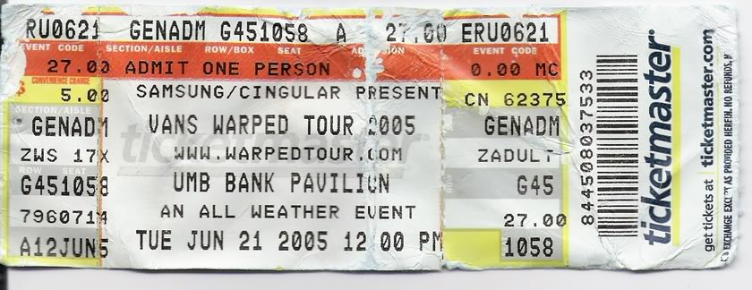
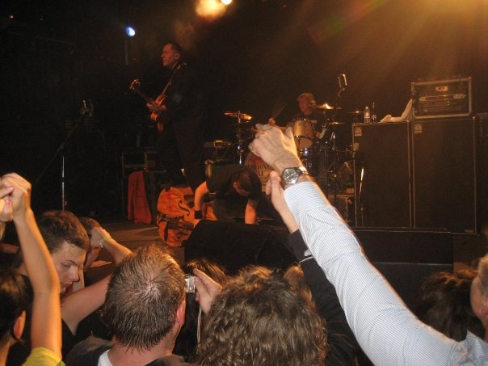

Early Years |
College |
Adult Years |
|---|---|---|
| N'Sync (x3) | Switchfoot | Nektromantix, Split Lip Rayfield & Reverand Horton Heat |
| Backstreet Boys (x2) | Against Me! | Mill Records Grand Opening Show |
| Destiny's Child | Teenage Bottlerocket | Reverand Horton Heat (2x) |
| Shaman's Harvest (x2) | the Cru Jones (x2) | Flogging Molly (2x) |
| Something Corporate | Hawthorn Heights, From First To Last, & Fall Out Boy | New Found Glory & Yellocard |
| Hawthorn Heights | I Am Ghost & The Matches | Andrew McMahon & the Wilderness, Panic! at the Disco, & Weezer |
| 30 Seconds to Mars | Against Me!, Thursday, Rise Against | Nathaniel Ratliff & the Nightsweats |
| Fall Out Boy | Taste of Chaos 2008 | Taking Back Sunday & the Used |
| Panic! at the Disco | Agent Orange | The Aquabats & Reel Big Fish |
| Warped Tour | The Used | |
| Reverand Horton Heat | Hawthorn Heights, Bayside, & Aiden | |
| Tiger Army | ||
| Third Eye Blind | ||
| Reverand Horton Heat (x2) | ||
| Warped Tour |
Here a list of many of the concerts I've attended at different stages of my life. It's strage to look back and see how my music choices have changed(ish) and how sharply my concert attendance has declined. Some of the bands names may be links! If you keep scrolling, you can see some of my favorites and some pictures I've collected on my concert going journeys!
The Favorites
I have been to several shows, but only a few rank up there with my favorites
Flogging Molly
March 2014
I have loved Flogging Molly the early 2000's. I discovered them through the Dropkick Murphy's (who I discovered only slightly before on a Warped Tour complation album). On of my most favorite songs of all time is "If I Ever Leave This World Alive" and I, should I ever get hitched, I plan to work that into the ceremony somewhere.
I was lucky enough to see them at the Midland Theater in KC, MO for the first time and then again at Crossroads KC. Both shows were AMAZING. I planned to see them a third time last summer, but financial distress forced me to sell my tickets. That said, I'm already looking for a concert buddy for the next time they roll through Kansas City!
Warped Tour 2005
June 21st, 2005
I was a 17 year old emo kid and Warped Tour was mecca. I took the train to St.Louis (my first time alone!) to meet my friend for the show. Neither of us had been to an event like this and it seemed HUGE.

I fell down in the mosh pit while watching My Chemical Romance (yes, they had a mosh pit), watched my friend do the same in the crowd for Matchbook Romance. We chilled at a small ampitheater spot and watched bands that would later become favorites. We both got insanely dehytrated, shared water and sunscreen with strangers and didn't care. We left sweaty, sunburned, covered in other beer and other people's sweat, and excited to do it all again as soon as possible. We decided then to do it again the next year (I ended up going alone due to some suprise circumstances)
The Aquabats & Reel Big Fish
July 2019
I found out about this show 8 hours before it was taking place and bought a ticket without hesitation. It was one of the best decisons I've made in a long time. I may not know every song, but the Aquabats hold a special, silly place in my pea-little-heart and Reel Big Fish's "Fuck You" cheered me up on some remarkably shitty days.

By the time I attended this show, I considered myself a seasoned concert going veteran. So I pulled on my rattiest pair of Chucks (with inserts because I'm old now, apparently) and prepared for punk show battle. What I encountered was one of the most entertaining shows I've experienced. There were inflatable sharks, kids crowd surfing on giant inflatable pizza slices, and Reel Big Fish playing the same song several times in diferent genres - expecting the crowd to dance accordingly (you have not lived until you've seen a "Ska Guy" trying to figure out skanking to a country ballad, it's hilarious). Seriously, one of the best shows of my life. I sincerly hope to see both bands again...soon!
The Reverand Horton Heat
Summer 2005
I was first introducted to the Rev on yet another compilation CD in the early 2000's. I'm not even sure what that song was, but they rolled through Colulmbia, MO and I decided to check them out. This was a most excellent decison, as they remain the band I have seen live the most times (5) and I wouldn't mind catching another show!

Jimbo (upright bass) and the Rev do this really nifty thing at most shows, where they lean the bass to the side and the Rev climbs on to "surf" while both continue to play. The showmanship is awesome. The shows themselves are fun and not overly exhausting.
Against Me!
October 10th, 2005
This was the first show I went to in college. It was my birthday. It was snowing. It was also my first real punk show (I'm not counting Warped Tour).
I saw them at a local Laramie bar known as the 2nd stree Cowboy (there were two bars in Laramie named "The Cowboy"). They didn't really have a "stage" so much as a raised platform, so if you were in front you were basically face to chest with band. It was wild. There were people randomly getting on the stage and a few were (somehow) crowdsurfing. There was lots of moshing/circling. It was awesome.